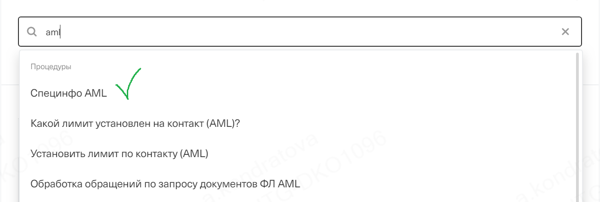

Давай начнем с небольшой теории. Что же такое AML?
Простыми словами - это борьба с легализацией денег, которые получены преступным путем — «отмыванием денег».
Под легализацией в этом случае понимаются действия, скрывающие источник происхождения денежных средств с целью придания им законного характера.
AML включает в себя комплекс мер, которые направлены на предотвращение нелегального использования
финансовой системы страны или конкретного финансового учреждения.
Как ты правильно понимаешь, никакое государство, либо организация не хочет брать на себя риск вовлечения в такие схемы пособничества терроризму.
Давай изначально посмотрим какие механизмы и документы выработало государство для работы с AML ->
Меры по борьбе с отмыванием денег со стороны государства.
Если ты обработал хотя бы один кейс с BAML - ты уже видел упоминания упоминания о них. Но как в работе нам поможет 115фз? Что там есть интересного именно для тебя?
Говоря о его цели - он направлен на защиту прав и законных интересов граждан, общества и государства, а также
описывает работу правового механизма противодействия легализации (отмыванию) неподтвержденных денежных потоков.
Теперь давай разбираться как именно 115 фз помогает нам в работе.
Если ты откроешь эту статью ФЗ в отдельной вкладке перед тем как перейти на следующий слайд - будет славно.
Меры по борьбе с отмыванием денег со стороны государства. 115-ФЗ
Для нас с тобой 4 статья является прямым доказательством законности действий банка в работе с AML и вынесении решений. Она описывает меры государства при работе с AML. Такие как:
Организация и осуществление внутреннего контроля на предприятиях;
Как это влияет на нас? Доказывает целесообразность работы отдела финансового мониторинга в банке.
Запрет на информирование клиентов и иных лиц о принимаемых мерах противодействия легализации (отмыванию) доходов.
Как это влияет на нас? Мы не вправе информировать об этапах и работе нашей комплексной проверки. Это наш внутренний процесс.
А в статье 7.4 указана законодательная обоснованность требования документов:
Клиенты обязаны предоставлять организациям, осуществляющим операции с денежными средствами информацию, необходимую для исполнения указанными организациями требований настоящего ФЗ.
Как ты видишь, в 115 фз много информации, помимо этой, которая поможет тебе.
Взгляни на статью 7
о правах и обязанностях организаций или на то, каким именно образом работает
Росфинмониторинг.
А теперь взглянем на то каким образом наш банк ведет борьбу с этим.
Меры по борьбе с отмыванием денег со стороны нашего банка.
По аналогии с мерами государства, у нас есть и свой "надзорный орган" и документ, помогающий в работе.
Подразделение нашего банка, которое может инициировать и провести комплексную проверку, а впоследствии вынести по ее итогам решение - это
Отдел финансового мониторинга. Данный отдел напрямую ведет взаимодействие с Росфинмониторингом.
В качестве документа, в котором указан порядок работы банка с AML используется
УКБО.
Нам с тобой нужно запомнить некоторые пункты, которые помогут при работе с такими кейсами. А именно - пункты 4.5 и 7.3.9. Было бы совсем не эффективно просто
дать тебе ссылки на них. Поговорим о том, что в них именно может помочь.
Меры по борьбе с отмыванием денег со стороны нашего банка. УКБО.
Пункт 3.3.6Ссылка на пункт.
Этот пункт обязует клиента предоставлять документы и сведения, если банк их затребовал для выяснения характера выполняемых клиентом операций .
Пункт 4.5Ссылка на пункт.
Благодаря этому пункту мы и имеем право менять доступность каналов обслуживания для клиентов. Например, установить ограничение на Дистанционнное обслуживание
на период ожидания документов.
Пункт 7.3.9Ссылка на пункт.
А этот пункт расширяет предыдущий. Указывает на то, что мы вправе отказать в проведении платежей по счету после отказа клиента предоставлять документы об операциях, а также после вынесения решения
об ограничении дистанционного обслуживания.
Будь внимателен. BAML - это не блокировка и не удержание банком денег на счету. Что это в таком случае? Нажимай далее.
Блокировка или ограничение?
Давай мы запомним с тобой прямо сейчас. BAML - Это ограничение ДБО.
Почему важно говорить именно так? Почему не блокировка? После вынесения решения об ограничении ДБО клиент должен понять, что его
деньги не удерживаются и не блокируются банком.
Одной из самых частых причин негатива после вынесения решения о BAML является непонимание клиентом ситуации. Поэтому для нас с тобой крайне важно
дать понять клиенту, что решение об ограничениях было принято после комплексной проверки и клиент может вывести деньги со счета Тинькофф,
предоставив свои реквизиты в другом банке.
Причем нам важно сказать только то, что от нас требуется и не нагружать клиента лишней информацией. Руководствоваться информацией из СИ и процедур.
Давай взглянем на то, как это видим мы и клиенты.
Как обрабатывать? Взгляд со стороны клиента.
При запросе документов банком клиенту приходит уведомления по доступным каналам дистанционного обслуживания подобного типа
В ситуации с уже вынесенным решением в чате с клиентом ты можешь увидеть сообщение такого вида.
Давай смотреть как нам понять, что дело мы имеем с BAML.
Как обрабатывать? Взгляд с нашей стороны.
В ситуации с уже вынесенным решением, если ты видишь вот это СИ:
Перед тобой как раз кейс с BAML.
Дальше уже нужно разобраться с процедурами, которые нам помогут.
Как обрабатывать? Взгляд с нашей стороны.
Разберем какая процедура поможет.
Давай запомним - как только ты понимаешь, что перед тобой BAML - ищи именно её:

Она - наше всё. Даст тебе понять что же дальше делать, что сказать, в ней всегда указан правильный порядок действий.
С процедурой определились, пойдем разбираться с реальными кейсами.
"У меня запросили документы по моим операциям из-за какой то проверки. Кидаю их вам в чате."
Представь, что ты получил это сообщение от клиента в чате. Запусти процедуру "Специнфо AML". Мы можем увидеть, что банком были запрошены документы.
Кликнув на "Обращается по таску AML" ты можешь увидеть следующий экран.
Выбрав его - ты попадаешь уже на экран действий с таском. Помнишь зачем обратился клиент?
Тебе лишь остается загрузить документы в таск. Ты сделал свою работу, молодец.
"Я хочу вывести свои средства. Вот мои реквизиты"
Разбираем порядок действий для вывода средств в другой банк по BAML.
Открываем "Специнфо AML"
Выбираем вариант вывода средств с закрытием. Пожалуйста, не пропусти информацию на этом этапе вывода средств.
Если клиент понял условия и подтверждает перевод - заполняй информацию на следующем этапе
"Я предоставил вам реквизиты, вы отправили деньги в Сбербанк, но они не пришли. И похоже, что вернулись обратно."
Происходит это из-за разницы в написании имен в нашем банке и в Сбере. Есть негатив - подсвети факт, что
с нашей стороны нет ошибки, мы вывели средства на предосталвенные реквизиты, они были не приняты и возвращены Сбербанком.
Воспользуйся следующим порядком:
Пришли через процедуру "отправка документов ФЛ" справки с подтверждением операции.
Отдельно по переводу в Сбер и возврату. Чтобы было получено именно платёжное поручение.
Направь клиента с этими платежными поручениями в Сбер для формирования претензии. Рекомендуй клиенту, чтобы ему либо предоставили письменный ответ на претензию, либо в чате объяснили, как сделать, чтобы перевод дошёл.
Просим скрин, фото ответа. Также, есть ситуации, когда в Сбере меняют написание имени в системе на написание в нашем банке.
После получения ответа от Сбера - выводим средства, как мы это уже делали, но приложив ответ сбера в качестве комментария(если он есть).
Вопросы со звездочкой
Здесь мы разберем вещи, которые не вошли в общий курс, но знание которых может пригодиться в работе.
Почему отклоняете мой входящий перевод?
На основании 848 статьи ГК РФ. А именно - второго её пункта,
который говорит о том, что могут быть предусмотрены случаи, когда банк обязан отказать в зачислении на счет клиента денежных средств.
Если сейчас я закрою счет и выведу средства, а потом открою его в вашем банке снова. Ограничения сохранятся?
Мы не может отказать вам в праве подать заявку на повторное открытие счета в нашем банке. Однако и не можем гарантировать ни положительного
рассмотрения вашей заявки, ни отсутствия ограничений.
Если я выведу средства могу ли я не закрывать в таком случае счет?
Нет, если вы сейчас даете согласие на вывод средств, то и аккаунт ваш мы тоже закрываем.
Как мне оспорить это решение?
Твоя задача при таком вопросе объяснить, что решение окончательно и пересмотру не подлежит. Но при прямой угрозе отзыва ты можешь выбрать в действиях с таском "Клиент не согласен с мерами"
и упомянуть об угрозах .
Вопросы со звездочкой
Что делать с инвестиционным счетом после вынесения BAML?
Нельзя пополнить брокерский счет с карт Тинькофф и карт других банков. Вывод средств и совершение сделок доступны без ограничений.
Важно, чтобы была основная дебетовая карта в банке, иначе вы не сможете войти в приложение и личный кабинет в случае сброса авторизации.
А вы передаете информацию всем банкам информацию про то, что у меня BAML у вас?
Нет, это внутренняя информация банка о вынесении решения об ограничении ДБО.
Что это за такая комплексная банковская проверка? Расскажите про нее мне.
Это является внутренней информацией компании. К сожалению, я не могу говорить об этом.
Что делать если нет счета в другом банке?
Напомнить клиенту, что вывод средств возможен только на его же реквизиты в другом банке. Объяснить, что деньги в банке никуда не денутся и он
будет иметь возможно их вывести как только откроет счет в другом банке.
Правила прохождения теста
1. У вас будет только 60 секунд на каждый вопрос.
2. Выбрав вариант ответа - вы больше не можете переключить его на другой.
3. Выход из теста во время прохождения невозможен.